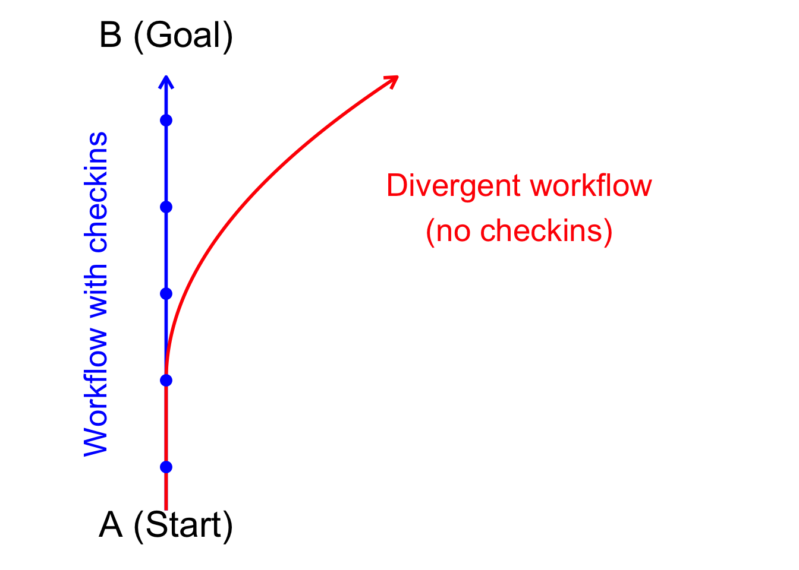

Chapter 9 Automated workflows with Agent mode
Agents are LLMs that have tools that allow them to work autonomously. In effect they review the results of tool use (such as writing code and running code), then respond to those results.
In Copilot’s chat window you can set it to ‘Agent’ mode to enable these features.
After each tool use copilot will ask you to confirm the changes and the next action. At that point you can review its changes, make edits, or continue chatting to suggest refinements.

Agent mode has access to the terminal, so it will be using the terminal application to run scripts it creates. We’ll demonstrate in class so you can understand what its doing.
Image: Agent mode from https://code.visualstudio.com
You can also just accept every suggestion without reading it, also called ‘vibe coding’. However, I don’t recommend doing that, especially when you are starting out. You need to get a feel of how much direction it needs and problems it might create. Without human intervention the algorithms have a tendency to go off task:
## Warning: Using `size` aesthetic for lines was deprecated in ggplot2 3.4.0.
## ℹ Please use `linewidth` instead.
## This warning is displayed once every 8 hours.
## Call `lifecycle::last_lifecycle_warnings()` to see where this warning was generated.
Have a readme with clear steps that you attach as a prompt is also helpful for Agent mode. It helps it stay on topic.
Agent mode also allows installation of additional tools, which we’ll explore later.
9.1 Exploring agent mode
Let’s explore Agent mode’s features through some analysis.
9.1.1 Motivating example Bayesian time-series analysis
We’ll develop time-series models to forecast rock lobster (Jasus edwardsii) abundance from annual diver surveys. I’ve provided you with summary data. If you want to use this data in your research it is freely available and the original should be downloaded from the AODN portal.
We’ll use the INLA package for our time-series models. We’ll fit it for the first part of the data, then we’ll forecast to the last part. In this way we can test the model’s predictions against data that is independent of model fitting (validation).
The example is based on my study where I asked how accurately we can forecast species abundance change in dynamic environment. In a rapidly changing environment the models we fit to historical data may no longer make accurate predictions to future, novel, environments. So our current models may overstate the future predictability of ecosystems.
In short, the environments we want to predict to in the future have no analogue in contemporary data. This may make accurate prediction more challenging.
To explore this idea I developed a new way of validating time-series. I deliberately designed validations that forced the model fitting to be to older data and the forecasting and accuracy evaluation to be on contemporary data. As such, if the environment has changed the parameters the model has learned from the historical data will no longer be relevant in the contemporary environment.
We found the new method gave much more pessimistic estimates of model accuracy for species that undergo rapid changes. Whereas for species that have resisted environmental change the new method gave comparable results to traditional methods of validation.
In today’s workshop we’ll look at the first step, which is how to fit a model and make forecasts.
We chose Bayesian models with INLA because have several advantages over alternatives:
Allow for complex heirarchical models in a familiar GLMM framework - we have structuring by time and sites to consider
Are computationally fast to run - convenient if you are re-running the model to do cross validation.
Automatically handles gaps in time-series - Our data has a gap in 2003 when funding for monitoring wasn’t available
Straightforward to model non-normal data - we are using counts.
We’ll use INLA to fit auto-regressive order 1 (AR1) models to rock lobster abundance, with a negative binomial distribution. We’ll also use INLA to make forecasts.
Another nice thing about INLA for us is that it has an unusual way of implementing predictions. This tends to trip-up copilot, so we’ll see how to overcome that challenge and get copilot to write correct code.
9.1.2 Set-up your project
Set-up a new project, including creating a readme following the structure we used before.
Here’s the link to the data:
library(tidyverse)
dat <- readr::read_csv(url("https://raw.githubusercontent.com/cbrown5/R-llm-workshop/refs/heads/main/resources/ATRC-RLS-jasus-edwardsii-maria-island.csv"))You can see the readme.md I used to get started here. I encourage you to write your own to get a feel for how it works and develop your own style.
9.1.3 Prompts I used
Once I had the folder and readme set-up here’s the series of prompts I used. I encourage you to explore making your own. I used Claude 4.0 as the model option. I’ve found that GPT occaisonally makes errors with tool use or stuffs up text matching when editing files (meaning it inserts text in the wrong place).
I started a new chat session between each of these prompts. This helps manage the context window. I’m relying on updating the readme.md so Copilot has memory (and I get it to update that).
Start by documenting the directory structure in the readme.mdI'd be most pleased if you can undertake to perform steps 1-2. Document the data variables in the readme when you are done. Tip: There’s no ‘optimal’ prompt, only better prompts. Sometimes the best way to write is the way you are most comfortable writing. You’ll get more out of your brain that way and copilot will end up performing the same.
Ahoy you salty sea dog, we've scrubbed down steps 1 and 2, time for you to raise the sail on step 3!(Ok so that last prompt definitely doesn’t follow the guidelines of being super clear, but I was bored and it seemed to work ok)
It wrote some nice code for step 3, but had some problems with model convergence. At this point I intervened manually and edited the model myself. I didn’t really want it deciding the model structure for me, as I knew what I wanted (below is the model I used FYI). That fixed it and I got it to document the changes then started a new chat.
Note that the Agent changed the default fitting algorithm, which I wasn’t pleased with. So always important to check the details.
simple_model_formula <- total_lobsters ~ 1 +
protection_status +
f(site_numeric, model = "iid") +
f(year, model = "ar1", hyper = ar1_prior)
ar1_model <- inla(
formula = simple_model_formula,
data = train_data,
family = "nbinomial", # Use negative binomial for count data
control.predictor = list(compute = TRUE),
control.compute = list(
dic = TRUE,
waic = TRUE,
cpo = FALSE, # Disable CPO to help convergence
config = FALSE
),
verbose = FALSE
)After fixing the model and updated the readme, here’s the next step:
Alright cobber, take you best shot at step 4That worked, which actually I was expecting it not to work based on prior experience. INLA does predictions as part of model fitting, so you can’t predict(model1) like you can with other packages.. I’ve found that often trips up copilot when it tries to predict directly from the model object. It might be that Claude 4.0 (only came out as I was writing this) now ‘knows’ not to make that mistake.
I tried again with Claude 3.5 (older version) to see if I could fool that one. However, it avoided the problem by writing a custom fitting function (which would need careful checking).
Anyway, the lesson was meant to be to show you how to solve these types of problems by attaching domain knowledge like the FAQ linked above.
Copilot agent did have some problems running Rscript on my computer (used to source R files from terminal). So I added this line to the readme to help it: When using Rscript from terminal be sure to put the script in ““, e.g. Rscript "Scripts/script1.R"
Just step 5 left to go, make me some nice plots using the types of colours that Wes Anderson would choose9.1.4 Writing up the project?
You can keep going from here if you like and get agent mode to write up the results it found as an Rmd file. It will use the tables it generates to (hopefully) make accurate interpretations. Pretty soon Copilot will also have vision capabilities (currently available in preview mode as of 2025-05-27). This means it will be able to interpret the figures it creates as well. We’ll see that in action when we look at Roo Code in a bit.
If you do that, as always, don’t take anything for granted. Make sure you check everything and understand the results yourself.
9.1.5 Custom intstructions
For heavy agent use you may want to set-up custom instructions. These apply to all prompts in a project. e.g. you could set preference for ggplot2, or tell it how to use Rscript to avoid terminal errors See here for instructions.
9.2 Summary
Agent mode can really accelerate your workflow development. But there are some risks. It can also go off track or write excessive amounts of code (over-engineering). Best practices for using Agent mode include:
- Separate science questions (what stats) from implementation stats (what code)
- Understand the stats you want to do, don’t just rely on copilot to get it right
- Checking what it does at is does it, so you can keep it on track
- Giving strong guidelines e.g. through a project readme file.
- Keeping the readme updated to guide copilot
- Report AI use and how it was used in your publications